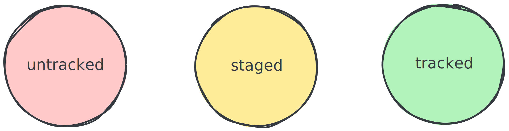

Introduction to
The goal
Not all the commands, but enough that you git it.
But—before we git we man
If you are not familiar with man, it is a command-line utility for reading the manual pages (documentation) of the Unix and Unix-like operating systems.
Try it out:
man man
Hint: Use
qto exit.
We will only cover a fraction of git commands, but you can always read the manual pages for more information. Now you know how.
man git- # Press tab for auto complete (if you are using zsh or similar)
What is Git?
Git is a distributed version control system (VCS).
Traditionally VCSs were centralized, which came with some downsides—but Git is distributed. This means that every developer has a full copy of the repository on their local machine.
Commands
In Git, commands are divided into high-level ("porcelain") commands and low-level ("plumbing") commands.
We will be using a bit of both.
Some terminology
- repo: A project tracked by Git.
- commit: A snapshot of the repository in its entirety at a specific point in time.
Represented by a SHA, which is a unique identifier generated from the contents of the change, author, time, and more. Example:
61ddb117f38022913c17aa069fecc3013b38dd9d
- git index: The Git index is an essential data structure in Git, and it serves as the temporary staging area for changes before committing them to the project history.
When you run
git add, you are adding changes to the index. The files from your working directory are hashed and stored as objects in the index, leading them to be "staged changes".More info: Git Index
- work tree, working tree, main working tree: This is the directory and set of files that you are currently working on. The git repo. A working tree is setup by
git initorgit clone.
- squash: Combining multiple commits into one.
A squash would be taking N commits and turning it into 1 commit (most commonly). Great for cleaning up your commit history.
- untracked, staged, and tracked: The state of a file in the working tree.

untracked: A file that is not being tracked by Git. These files are easier to accidentally lose work on since Git is not tracking them.
indexed/staged: A file that has been added to the index. You must stage before you commit and you stage changes by using the
git addcommand.tracked: A file that is being tracked by Git. This means that Git is aware of the file and its changes and they will be included in the next commit.
Some facts
- Git is an acyclic graph
- In git, each commit is a node in the graph, and each node has a parent (except the first commit), and each pointer is a child to parent relationship
- If untracked files are deleted they are lost forever, so commit early and often—you can always change history to turn it into one commit (squashing)
For many people their experience with git can be summed up in these 5 commands:
statusaddcommitpushpull
Anything beyond that can feel very advanced.
We will go a bit beyond these.
For now, we assume you have zero knowledge and experience with git. This part of the course is about making you practically comfortable using git for daily work and forming some good habits.